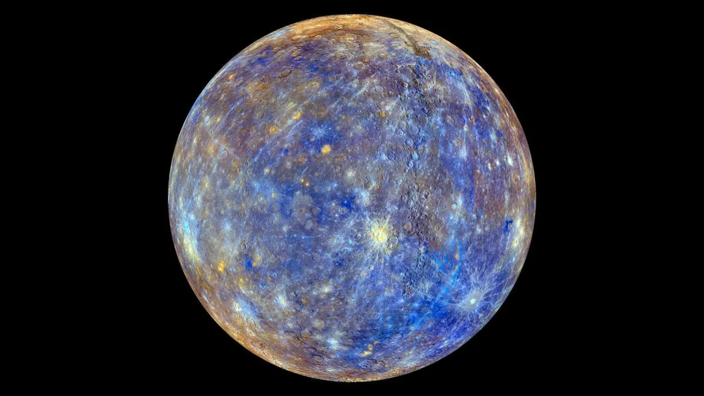
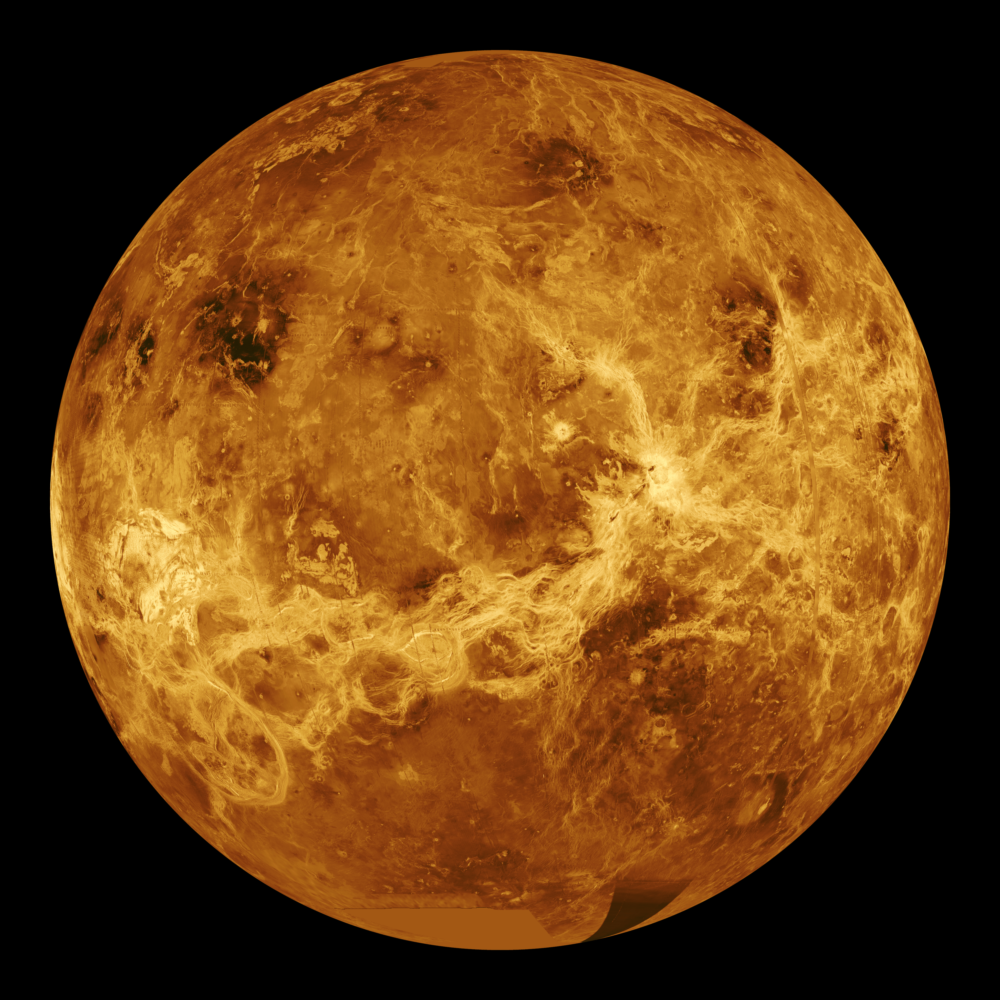
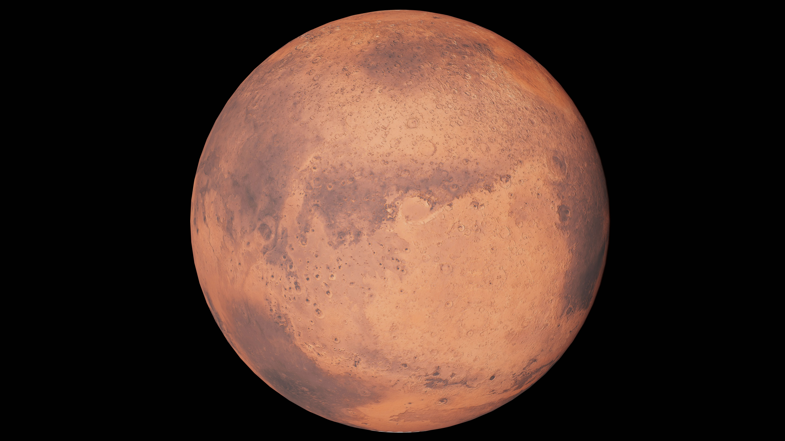
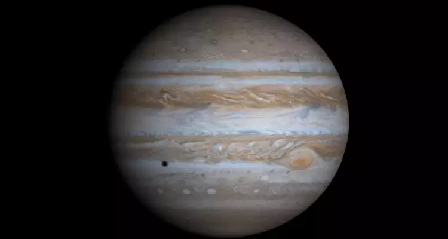
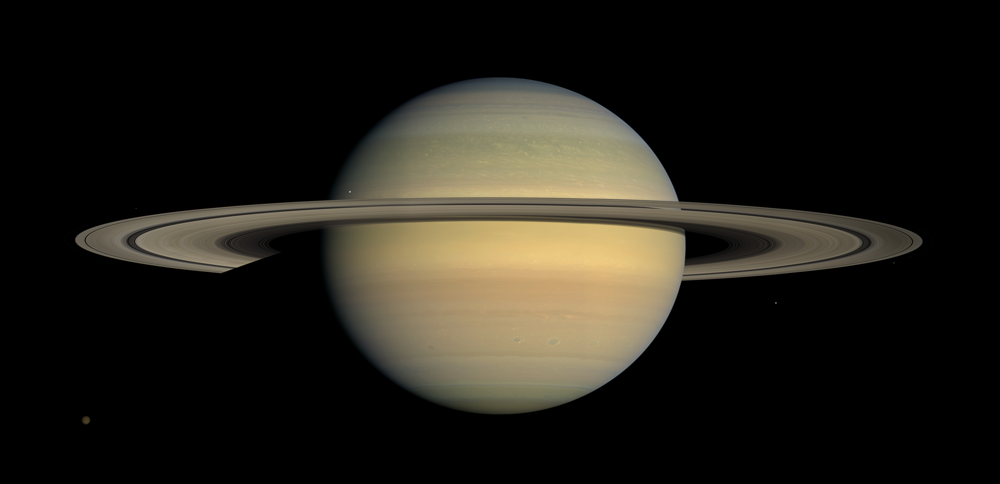
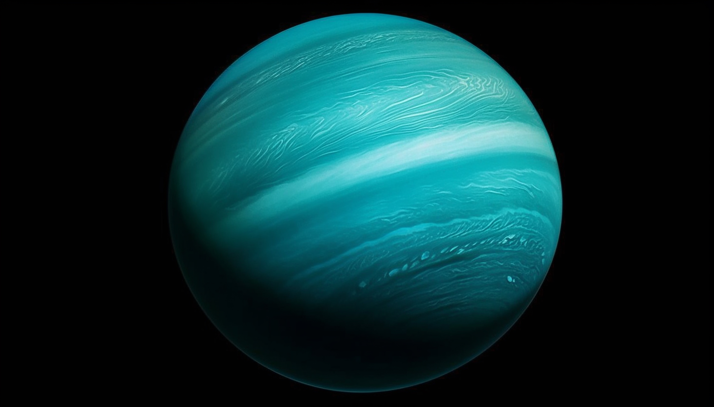
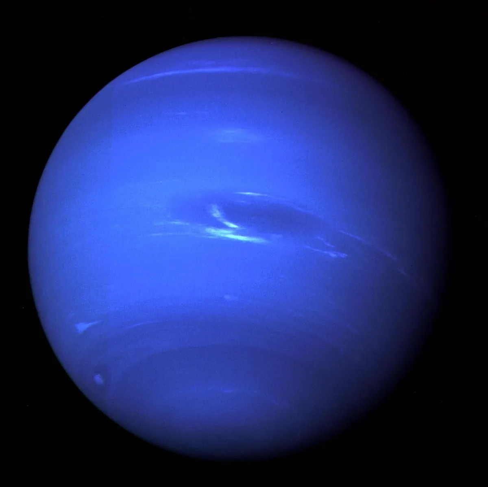

01PLANETA ROCHOSO
Mercúrio
O menor planeta e o mais próximo do Sol. Sua superfície é marcada por crateras.
Distância média do Sol57,9 milhões km
Descubra características únicas de cada planeta do nosso pequeno espaço no universo.
explorar planetasO Sistema Solar é um conjunto formado pelo Sol e pelos planetas, luas, asteroides, cometas e outros corpos celestes que orbitam ao seu redor devido à força da gravidade. Ele está localizado na Via Láctea e tem o Sol como sua principal estrela.

01PLANETA ROCHOSO
O menor planeta e o mais próximo do Sol. Sua superfície é marcada por crateras.

02PLANETA ROCHOSO
Envolto por uma atmosfera densa, é o planeta mais quente do Sistema Solar.
 03
03
PLANETA ROCHOSO
Nosso lar. Até onde sabemos, é o único mundo que abriga vida.

04PLANETA ROCHOSO
Conhecido como planeta vermelho, guarda sinais de que já teve água líquida.

05GIGANTE GASOSO
O maior planeta. Sua Grande Mancha Vermelha é uma tempestade gigantesca.

06GIGANTE GASOSO
Famoso por seu amplo sistema de anéis compostos principalmente de gelo e rocha.

07GIGANTE DE GELO
Um mundo azul-esverdeado que gira praticamente de lado em relação à sua órbita.

08GIGANTE DE GELO
O planeta mais distante do Sol, com ventos extremamente rápidos em sua atmosfera.